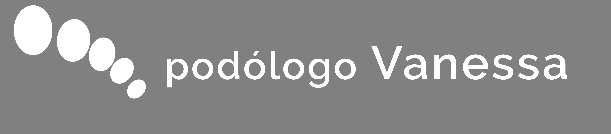

Auditoría FARO · Julio 2026 · 2 minutos de lectura

Lo que vimos durante el primer recorrido por vuestra web
Antes de escribir este informe hicimos una prueba sencilla: imaginamos que éramos un paciente buscando un podólogo en León por primera vez. En menos de diez minutos encontramos varios elementos que generan mucha confianza — pero algunos aparecen demasiado tarde en el recorrido.
Analizada el 12 de julio de 2026 · solo observaciones visibles desde fuera
Lo que encontramos
Un negocio con más recorrido del que hoy se ve
- Valoración Google
- 4,8/5
- Reseñas
- 20
- Trayectoria
- Desde 2003
- Servicios listados
- 9
Una formación diferencial que pasa desapercibida
Especialización en retropié, formación de posgrado, responsabilidad en ortopedia y actividad investigadora — todo aparece en la página del equipo, pero no en los primeros segundos de navegación.

Así se presenta hoy en el primer vistazo
Un paciente nuevo puede no llegar a percibir el nivel de especialización que realmente existe.
sobre 20 reseñas · trayectoria desde 2003
La reputación genera confianza, pero podría tener más protagonismo
Esa prueba social no tiene hoy un papel protagonista durante el primer recorrido por la web.
Muchos pacientes comparan varios centros. Mostrar antes la reputación reduce incertidumbre.
Una especialización muy amplia que podría comunicarse antes
Atención diferenciada por perfil de paciente — una combinación poco común entre los podólogos de León:
Hoy están mezclados con los tratamientos técnicos, en nueve tarjetas todas del mismo tamaño.
Cuando un paciente encuentra rápido "su caso", es más fácil que siga explorando la web.
Cambios que priorizaríamos
No hace falta más información — hace falta que se vea antes
Dar mayor visibilidad a la experiencia y formación profesional desde la portada.
Reforzar la presencia de la reputación durante el primer recorrido.
Facilitar que cada tipo de paciente identifique rápido el tratamiento que necesita.
Qué esperaríamos conseguir
Que el valor que ya existe se perciba antes
No creemos que el reto sea incorporar más información — creemos que el valor que ya ofrece la clínica podría percibirse antes, con menos esfuerzo del paciente.
¿Comentamos si esto tiene sentido?
Hablemos 20 minutosFARO — automatización y mejora operativa para pymes de León. Sin compromiso, sin coste por este informe.